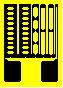
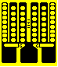

Auxiliary Resistors for Output Adjustment & Compensation
Strain Gage Based Transducer reference
For a stand-alone transducer to operate accurately with different instrument systems, all of the foregoing adjustment and compensation functions must obviously be integral with the transducer proper. This is normally accomplished by permanently inserting several different types of special resistors at selected locations in the transducer circuitry. These ohmic components, carefully specified for resistance value and thermal coefficient of resistance (TCR), may be in any of several forms: wire (ranging from short lengths to bobbins or spools), bondable resistors (either adjustable or fixed-value types), or discrete resistors in small plastic or metal cases.
Wire resistive elements offer the advantages of low cost and wide resistance range, with the latter readily obtainable by adjusting the wire length and/or diameter. Bondable resistors provide the additional advantage of very close thermal tracking of transducer response, since they are in intimate contact with the spring element surface. Regardless of the resistor construction used, there are two basic types needed: temperature-sensitive resistors, and those that are relatively insensitive to temperature. These are often referred to as "high-TC" and "low-TC" resistors, respectively. Low-TC resistors are required for initial circuit adjustments to achieve zero bridge balance and to set the transducer span at the desired level. Compensations for zero shift and span shift with temperature are accomplished with high-TC resistors. The resistance alloys commonly employed for low-TCR applications are constantan, Karma, and manganin. In contrast, copper, pure nickel, and Balco are the usual choices for high-TCR needs.
For all adjustment and compensation procedures except, perhaps, span shift, the appropriate value of the resistor is determined experimentally; and this value typically varies from transducer to transducer. As a result, in order to expeditiously meet their production requirements, the major transducer manufacturers often stock many different resistor values in the types being used. With smaller manufacturing operations, and for prototype or one-of-a-kind applications, adjustable resistors offer the more practical means for refining the transducer characteristics.
Three types of bondable adjustable resistors are illustrated below, with pattern (configuration) designations C, D, and E. All three types are based on "ladder" arrangements which allow the user to easily adjust the resistance (upward) by cutting away some of the "rungs" or steps in the ladder. Using a scalpel or other sharp tool, the horizontal webs are severed and removed to lengthen the conducting path, and thus increase the resistance.
D-Pattern Resistor
In the D pattern, for instance, cutting step X would increase the resistance by about 6% of the maximum obtainable value. Progressively cutting upward on this same ladder (leaving the top rung intact) would add about 6% of the maximum resistance for each step cut. The D pattern also has two outside ladders which, when cut progressively upward from the bottom, produce a finer adjustment equal to approximately 3% per cut. Selectively skipping steps of these ladders (i.e., cutting step Y after step X) produces finer adjustment in resistance. This feature gives the user a great deal of flexibility in gradually converging on the required final resistance. It can be seen from the figure that the E pattern is effectively similar to two D patterns placed side-by-side and joined with a common terminal. This configuration is designed for use at a corner of the bridge circuit, with one of the resistor halves in each of two adjacent bridge arms.

C-Pattern Resistor
The C pattern has somewhat different characteristics than the D and E patterns, partly because of the fixed minimum resistance associated with the single vertical filament near the right-hand edge. It is also different in the geometry of the ladders. With this configuration, the right-most ladder provides four cutting steps, each of which represents about a 20% increase from the uncut initial resistance. Similarly, the second ladder has four 10% steps, and there are twenty 1% steps in the remaining two ladders. As for the D and E patterns, step removal from near the top of a ladder causes a smaller resistance increment than does removal from near the bottom. The C pattern can be used whenever the minimum required resistance will be about half of the fully cut maximum. When it is not known whether any resistance will be needed, the D pattern is the better choice because of its very low uncut resistance.

E-Pattern Resistor
Bondable adjustable resistors are installed on the transducer spring element, wired, and protected from the environment using the same procedures as for strain gages. For optimum thermal tracking, the high-TCR compensation resistors should normally be located as close as possible to the strain gages, but preferably in a low strain field. Wiring which is within the bridge circuit should be symmetrical in length and placement, and should be in good thermal contact with the spring element.